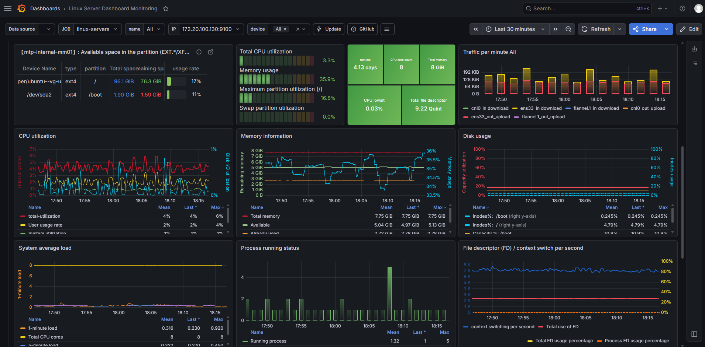
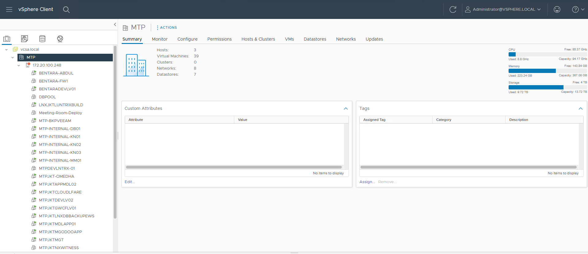

PROJECTS
Featured Projects

Enterprise Monitoring Platform
Built a centralized monitoring platform using Grafana, Prometheus, Alertmanager, Node Exporter, SNMP Exporter and Blackbox Exporter.
- 100+ Devices Monitoring
- Infrastructure Visibility
- Real-Time Alerting
- SSL Monitoring

Security Monitoring Platform
Implemented SIEM architecture using Wazuh and OpenSearch for security monitoring, threat detection and log analytics.
- Threat Detection
- Security Analytics
- Centralized Logging
- Compliance Monitoring

Enterprise Virtualization Platform
Managed VMware ESXi Cluster, vCenter Server, SAN Storage and enterprise backup solutions.
- High Availability
- Resource Optimization
- Centralized Management
- Disaster Recovery